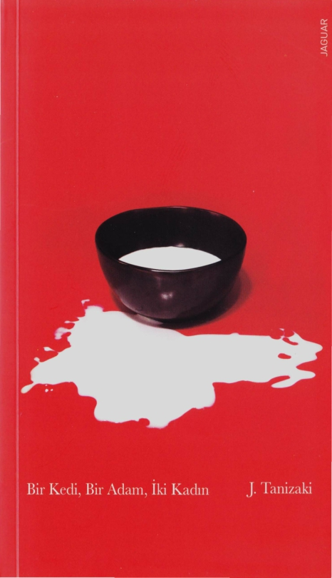
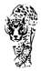

Tanizaki 1886'da varlıklı bir tüccar ailenin oğlu olarak Tokyo'da
doğdu. Ne var ki, o büyüdükçe ailesinin geliri düştü ve sonunda üniversitedeki edebiyat öğrenimini yarıda bırakmak zorunda kaldı. Fakat daha sonraları Japonya'nın tüm prestijli ödüllerini alacak bu genç yazar adayının edebi kariyeri henüz başlıyordu: Üniversitedey- ken 1909'da tek sahnelik bir tiyatro oyunu yazan Tanizaki, bir yıl sonra yayımlanan ilk öyküsüyle adını duyurmayı başardı. Sadece sonraki iki yıl içinde yazdığı dört romanda değil, yaşamı boyunca kötücül güzellik, erotizm, sadizm ve mazoşizm gibi temaların etra- fında gezindi. Oscar Wilde, Poe ve Marquis de Sade'dan etkilendi. Güzellik ve grotesk, onun sayfalarında hep yan yana geldi. Sevgi ve acı arasında yaşamı boyunca güçlü bir bağ kurdu. Kahramanlarının birbirinden ilginç tensel hazlarını reddedilme, aşağılanma ve mazo- şizmle birlikte sundu.
Tanizaki "büyük deprem"e dek, daha sonraları eleştireceği Batı- lı yaşam bir yaşam sürerek yazmaya devam etti. Ancak 1923'teki Büyük Kanto Depremi sadece Tokyo'yu değil Tanizaki'nin Batılı ta- rafını da yıktı. Tanizaki, yerle bir olan şehirden mecburen ayrıldı ve Osaka'ya gitti. Japon geleneksel evlerinden birine yerleşti. Japon estetiğine ve kültürüne karşı hiç sönmeyecek bir ilgi geliştirmeye ve Batılılaşmayı sorgulamaya başladı.
Japon kültürüne bağlılığını hiçbir zaman kaybetmese de, Batılı teknikleri başarıyla uyguladı ve ilk gençliğinde bağlandığı kaynak- lardan beslenmeye devam etti. Yazarlığının yanı sıra, Japon klasik- lerini modern Japoncaya da kazandıran Tanizaki, savaştan sonra- ki yaşamını yazarak ve ödül alarak geçirdi. Fakat 1958'de sağ eli felç oldu, 1960'tan itibarense hayatını hastanede geçirmeye başladı. Bunlara rağmen, 1962'de, birbirinden ilginç cinsel fantezilerini ya- zan yatalak bir hastayı konu edinen son romanını yayımladı. 1965'te geçirdiği kalp kriziyle hayata veda etti. Onun ölümüyle Japon ede- biyatı, çoğu eleştirmene göre en önemli modern yazarını kaybetti. Geçen yüzyılın en büyük yazarlarından biri kabul edilen Tani- zaki'nin Naomi adlı ünlü romanı da yine Jaguar Kitap tarafından yayımlanmıştır.
Sinan Ceylan, Bandırma'da doğdu. Lisans eğitimini Çanakkale
Onsekiz Mart Üniversitesi Japonca Öğretmenliği bölümünde ta- mamladı. Mezun olduktan sonra çeşitli özel şirketlerde çalışmaya başladı. Japoncadan kısa öyküler ve makaleler çeviren Sinan Ceylan, serbest çevirinin yanı sıra, üniversite yıllannda merak sardığı fotoğ- rafçılık ile de uğraşıyor ..
Bir Kedi, Bir Adam, İki Kadın / Juniçiro Tanizaki
Kitabın Özgün Adı
me:8:�e:=A0)3<:
©Juniçiro Tanizaki, 1936
©Jaguar Kitap, 2017
1. Baskı: Ağustos 2017
ISBN: 978-605-8259-33-1
Japonca Aslından Çeviren
©Sinan Ceylan
Editör
Hakan Toker
Sayfa Tasarım
Hakan Güngör
Baskı-Cilt
Ana Basın Yayın San. Tic. A.Ş.
Sertifika No: 20699
Bu kitabın yayın haklanJaguar Kitap'a aittir. Tanıtım için yapılacak kısa alıntılar dışında yayıncının yazılı izni olmaksızın hiçbir yolla çoğaltılamaz.
JAGUAR KİTAP
Cemal Nadir Sk. No: 16/77 Cağaloğlu / İstanbul
Tel: O 212 522 94 22 www.jaguarkitap.com iletisim@jaguarkitap.com Sertifika No: 27215
BİR KEDİ, BİR ADAM, İKİ KADIN
Juniçiro Tanizaki
Japonca Aslından Çeviren
Sinan Ceylan

Sevgili Fukuko,
Mektuptaki iade adresine Yuki'nin adını yazmak zo- rundaydım, kusura bakma lütfen. Ama maalesef Yuki değilim. Bu dediklerimden kim olduğumu çıkarmışsındır. Belki de daha zarfı açar açmaz anlamışsındır zaten. Kendi kendine, "Aa, Yuki mektup yazmış," diyerek zarfı açmış ve kızarak, "Bu ne cüret! Bana mektubunu okutmak için arkadaşımın adını kullanmış," demişsindir. Amabir düşün Fukuko. Kendi adımı yazsaydım, o görür ve mektubun eline geçmesine mani olurdu. Bundan eminim. Ve mektubu okumanı istiyordum. Yani görüyorsun ya, başka yolu yoktu. Fakat için rahat olsun - olanlar için seni suçlamak ya da iyi niyetini suiistimal etmek gibi bir amacım yok. Öyle olsaydı, bu mektubun on yirmi kat uzununu yazardım. Ama bir işe yaramazdı, değil mi? Ha ha ha, yaşadıklarım sayesinde ben de artık çok güçlü oldum. Onca ağlanacak şeye ve pişmanlığa rağmen sürekli ağlamıyorum. Çünkü olanları kafaya takmamaya, olabildiğince iyimser olmaya karar verdim. Neticede, insanın başına gelecekleri yalnızca Tanrı bilir ve başka insanların mutluluğunu kıskanmak, onların mutluluğundan nefret etmek aptallığın daniskasıdır.
7
Eğitimsiz bir kadın olsam bile, böyle doğrudan sana yaza- rak kabalık ettiğimin farkındayım ama Tsukamoto Bey'den defalarca yardım istediğim halde bana kulak asmadığı için senden yardım istemek durumundakaldım. Bunu söylemekle zahmetli bir şey isteyeceğim izlenimi yaratmış olabilirim; kesinlikle öyle olmadığını belirteyim. Senin evinden istedi- ğim yalnızca tek bir şey var. Bunu söylerken, onu kast et- miyorum elbette. Ben çok daha önemsiz, çok daha sıradan bir şeyi, Lili'yi istiyorum. Tsukamoto Bey'in dediğine göre o, Lili'yi bana verip vermemeni umursamıyormuş; buna tek engel senmişsin. Bu doğru mu Fukuko? Biricik dileğimin gerçekleşmesine gerçekten sen mi mani oluyorsun? Ben sana kendi hayatımdan daha değerli olan o adamı verdim. Sadece onu mu, onunla beraber kurduğumuz huzurlu yuvamızı da verdim. Kırık bir çanaktan başka bir şey de almadım. Hatta evlenince getirdiğim çeyizimden kalanlan bile almadım. Eski anılan oonlandıracak şeyi.eri etrafımda görmemek işime geliyor elbette. Sadece Lili'yi almak istiyorum. Buna izin veremez misin? Başka manasız istekl.erde bulunmayacağım, her şey- den geçtim, yenildim, aşağılandım ama yine de katlandım. Bu kadar büyük fedakarlığın karşılığında ufak bir kediyi istemek çok mu?Senin için zaten varlığıyla yokluğu bir, ufak bir hayvan, ama benim yalnızlığıma teselli olabilir... O ka- dar korkak olduğumu düşünmeni istemiyorum fakat Lili de olmayınca yalnızlığa katlanamıyorum. Şu koskoca dünyada o kedi dışında kimse varlığıma ihtiyaç duymuyor. Bu kadar kötü durumdayken, beni biraz daha üzmek mi istiyorsun? Yalnızlığım ve kederim için biraz olsun üzülmüyor musun? Yo, hayır, sen öyle biri değilsin. Adım gibi biliyorum ki, Lili'den vazgeçmeyecek olan sen değilsin, o adam. Lili'yi çok seviyor. Hep senden ayrılınm da bu kediden vazgeçemem
B
derdi. Ve gerek yemekte gerekse uyurken Lili'yi hep benden üstün tutmuştur. Öyleyse neden dürüstçe çıkıp kediyi ve- remeyeceğini söylemiyor da seni bahane ediyor? İşte bu da senin düşünmen gereken mesele Fukuko.
Nihayetinde yaşlı bir dırdırcı olan benden kurtuldu ve sevdiği kızla, yani seninle yeni bir hayat kurdu. Benimle beraberken Lili'ye ihtiyaç duyuyordu. Ama şimdi kedinin varlığının engel teşkil etmesi gerekmiyor mu? Kedi olmasa bir şeyler eksik mi kalır yoksa hfıla? Ve bu, tıpkı bana yap- tığı gibi, seni kediden aşağı gördüğü için olmasın sakın? Affedersin, haddimi aştım... Eminim o kadar da ahmak değildir ama yine de kendi hislerini gizleyip seni bahane etmesi bir şeylerin ters gittiğinin işareti olabilir... Ha ha ha, bana ne ya!Ama sen yine de dikkatli ol, alt tarafı kedi deyip geçersen o kedi de senin yerine geçer. Asla seni yanlış yönlendirmeye çalışmam. Neticede bu olay benden çok seni ilgilendiriyor. Lili'yi derhal o adamdan uzaklaştırmaya bak. Olur da buna karşı çıkarsa, sence de tuhaf kaçmaz mı?
Fukuko mektubu kelimesi kelimesine belleğine kaydetti ve Şozo'nun Lili'yle ilişkisini daha dikkatli izlemeye başladı. Şozo, marine edilmiş istavrit eşliğinde sakesini içiyordu. Küçük bir yudum aldı ve kadehini bıraktıktan sonra yemek çubuk- larıyla bir balık alıp "Lili" diye seslendi. Lili arka ayaklan üzerinde dikildi ve ön patileriyle oval yer masasının kenarına basıp hareketsiz kalarak sahibinin tabağında duran balıklara baktı. Bar tezgahına yaslanmış bir müşteriye ya da Notre Dame'ın kulelerinden sarkan ucubelere benziyordu. Şozo balığı havaya kaldırınca Lili'nin burun delikleri titredi ve tıpkı hayranlıkduyanbir insanınkigibi büyüyüp yusyuvarlak olan gözleriyle lokmaya özlemle baktı. Ama Şozo o kadar kolay pes etmeyecekti.
9
"İşte geliyor!" diyerek balığı bumuna kadar sarkıtıp Lili'yi taciz ettikten sonra aniden çekip kendi ağzına attı. Sonra gürültülü bir şekilde balığın sosunu höpürdetip gevrek kıl- çıklarını çiğnedi ve başka bir balıkla aynı şeyi tekrar etmeye koyuldu. Yaklaştınp uzaklaştırarak, kaldırıp indirerek kediyi boş yere ümitlendiriyordu. Lili, patilerini masadan kaldırıp göğsü hizasında tutarak, arka ayakları üzerinde sendeleyerek balığı takip etmeye çalışıyordu. Balık, kafasının üstünde sa- bitlendiğinde avına gözleriyle odaklanıp patileriyle yakalamak için ileriye bir hamle yapıyor, başarısızlığa uğrayıp düşüyor ve tekrar deniyordu. Bu çılgın uğraşta istavriti kapabilmek beş on dakikasını aldı.
Şozo aynı şeyi ısrarla tekrar ediyordu. Kediye balık verip içkisinden bir yudum alıyor ve ''Lili" diye seslenip bir sonraki ödülü havayakaldırıyordu. Herhalde tabakta her biri yaklaşık beş santimetre uzunluğunda bir düzine kadar istavrit vardı. En fazla üç ya da dört tanesini kendisi yemiş, balıkların ge- risini sadece sirke sosunu yaladıktan sonra Lili'ye vermişti. "Ah, ah! Acıyor dedim sana! Aah!"
Lili omuzlarına çıkıp tırnaklarını batırınca Şozo böyle feryat etti.
"Sana diyorum! İn! İn oradan!"
Eylülün yansı geçmişti ve yaz sıcağı yavaş yavaş kay- boluyordu ama Şozo, şişman insanların pek çoğu gibi ter- lemeye meyilli olduğu için sıcağı sevmiyordu. Alçak yemek masasını, geçen günküsağanakyüzünden çamurla kaplanan arka verandaya çıkarmıştı. Üzerinde kısa kollu iç gömleği, yün kuşağı ve paçası dizine kadar inen donu ile bağdaş kurmuş oturuyordu. Yumru tepeleri andıran omuzlan etli ve yuvarlaktı; dolayısıyla, Lili tutunabilmek için tırnakla- rını kullanıyordu. Tırnaklan ince pamuk iç gömleğini geçip Şozo'nun etine giriyor ve bu da Şozo'ya acı veriyordu.
10
"Ah! Acıyor!" diye bir çığlık daha attıktan sonra, "İn aşağı dedim sana!" diye bağırdı. Sertçe omuzlannısilkiyor, kediyi inmeye zorlamak için yana doğru eğiliyordu. Ama kedi ye- rini korumaya kararlıydı ve iç gömleğinde kan benekleri belirinceye kadar tımaklannı Şozo'nun etine batırdı.
Her ne kadar kedinin "vahşiliğinden" şikayet etse de asla sahiden kızamıyordu. Bu durumun tamamen farkında olan Lili, memnuniyet belirten birtakım sesler çıkararak yüzünü yavaşça sahibinin yanağınayasladı ve sanki ağzının içindeki balığı görmüşçesine kendi ağzını cesurca adamın ağzına yaklaştırdı. Şozo çiğnemeyi bırakıp ağzından bir parça balık çıkaracak olsa, Lili lokmayı kapmak için kıvrak bir şekilde ileri atılırdı. Genellikle tek hamlede yutardı balığı; bazen de adamın ağzının kenarlarında kalanları bile dik- katle ve gönül rahatlığıyla yalardı. Hatta bazen aynı balığı farklı uçlarından beraber yedikleri bile olurdu. Sonra Şozo kaşlarını çatar ve homurtular eşliğinde yüzünü ekşitip si- nirle tükürürdü. Ama ne olursa olsun adam da en az kedi kadar eğlenirdi. Bu yorucu oyunlara ara verip dinlenirken, kadehini doldurması için karısına uzatırdı.
''Hey, neyin var?" diyerek kısa süre öncesine kadar neşesi yerinde olan fakat şimdi gözlerini kocasına dikmiş, kade- hini dolduracağı yerde ellerini gömleğinin koluna sokmuş vaziyette bekleyen karısına endişeyle baktı.
"Başka sake kalmadı mı?" diye sordu; şaşkın ve dikkatli bir ifadeyle eşinin yüzünü incelemeye devam ederken bardağı usulca geri çekti. Kadının yüzünde donuk bir ifade vardı, çekingen bir tavırla, "Sana söyleyeceklerim var," diyerek daha kederli bir görünüme büründü.
''Ne söyleyeceksin?"
"Bu kediyi Şinako'ya vereceksin."
11
''Neden?"
Şozo, eşinin ne demeye aniden böyle bir şey talep ettiğini düşünüp bir süre öfkeyle soluk alıp verse de kansı oralı bile olmadığı için ne düşüneceğini ve ne yapacağını bilemedi. ''Ne oldu böyle aniden?"
''Ne olduysa oldu, kediyi vereceksin. Yarın Tsukamoto Bey'i çağır da bir an evvel bitsin bu iş."
''Tamam da, nereden çıktı şimdi bu?"
"Reddediyorsun yani?"
"Dur, dur bakalım biraz! Sen bana nedenini söylemez- sen ne yapabilirim? Ne oldu sana, seni incitecek bir şey mi yaptım?"
Lili'yi mi kıskanıyor yoksa diye bir süreliğine düşün- düyse de bunun saçma olduğuna karar verdi. Nihayetinde Fukuko da kedileri çok seviyordu. Hala eski eşi Şinako ile yaşarken Fukuko'ya, eşinin bazen kediyi kıskandığından bahsetmiş, Fukuko da bu durumu küçümseyip alay etmişti. Yani adamın kediye olan düşkünlüğünü bilerek onunla ya- şamaya gelmişti. Dahası, eve geldikten sonra, Şozo kadar aşın olmasa da kediye şefkat gösteriyordu. Şimdiye kadar, tıpkı bugün yaptığı gibi, Lili'nin çiftin yemeklerine ortak olmasına karşı olumsuz tek bir kelime bile etmemişti. Ve bugünkü gibi, adam akşam sakesini açıp Lili'yle oynamaya başladığında, Fukuko ikisinin sirki andıran gösterisinden keyif alır, hatta kendisi de kediye birkaç kırıntı verir, bazen hoplatıp zıplatırdı. Yani Lili'nin araya sıkışmış varlığı, yeni evli çiftin daha da yaklaşmasına yarıyor, akşam yemekleri- nin daha neşeli ve rahat geçmesini sağlıyordu. Asla sorun
teşkil etmemişti. Öyleyse mesele neydi? Daha düne, hatta az öncesine, Şozo'nun beşinci ya da altıncı kadehine kadar her
12
şey yolundaydı. İçtiği bu kadehler mi durumu ters yüz edip kansını üzmüştü?Yoksa Şinako için üzülmeye mi başlamıştı? Şinako'nun evden ayrılırken ödeşmek için Lili'yi istediği doğruydu, üstelik sonrasında Tsukamoto Bey aracılığıyla aynı şeyi birkaç kez daha talep etmişti. AmaŞozo bu konuyu tartışmanın bile gereksiz olduğunu düşünerek her seferinde reddetmişti. Şinako'nun Tsukamoto ile gönderdiği mesajın aslı şuydu: Her ne kadar kendi karısını evinden ayırıp yerine başka bir kadını alacak kadar kalpsiz bir adamdan ayrıldığı için üzüntü duymuyor olsa da onu unutamıyordu. Ona ne kadar kızsa da, ondan ne kadar nefret etse de, bunu yapa- mıyordu.Buyüzden Şozo'yu hatırlatacak bir şeyler istiyordu; bu, Lili olabilirdi. Birlikte yaşarlarken adamın kediye gös- terdiği sevgiye içerlediğine şüphe yoktu, hatta bazen sinsice kediye kötü davranıyordu ama şimdi eski evlerindeki her şeyi özlüyordu; en çok da Lili'yi. Şinako, en azından Lili'yi alabilse, onu hiç olmayan çocukları yerine koyar, böylece bütün şefkatini ona boca ederdi. Bu da, bir bakıma, haya- tındaki kasvet ve yalnızlığı telafi edebilirdi. "Görüyorsunuz ya Efendi İşii, bütün mesele bu kedi, böyle düşününce onaüzülüyorsunuz, değil mi?" demişti Tsukamoto. Ama Şozo her zamanki yüz ifadesiyle, "O kadının dedikle- rine inanırsan mahvolursun," diye cevap vermişti. Şinako pazarlık konusunda uzmandı ve yetenekli olduğu için de söyledikleri uydurma şeyler olabilirdi. Mesela sert ve inatçı kişiliği gözönüne alındığında, Şozo'yu özlediğine ve Lili'yi çok sevdiğine ilişkin şefkatli sözleri çok şüpheliydi. Neden Lili'yi çok sevsindi ki? Kesin kediyi bir yere götürüp keyif için işkence falan edecektir. Böyle değilse de Şozo'nun değer verdiği bir şeyi ondan koparıp almak içindir... Ama hayır, bu Şinako için çok basit bir intikam yöntemi olacağından,
13
işin içinde daha çetrefil şeyler olabilirdi. Her halükarda, bizim alık Şozo, kadının gerçek niyetini bir türlü kestiremi- yordu ve bu da sinirlerini geriyordu. Hem o kim oluyordu da böyle bencilce taleplerde bulunabiliyordu? Elbette evi en kısa sürede terk etmesini istediği günden beri savunm asız taraf Şozo'ydu. Bu yüzden onun taleplerini genellikle kabul ediyordu; ama işi Lili'yi isteyecek kadar ileri götürmenin anlamı var mıydı? Tsukamoto'nunısrarlı ricalarına rağmen kendisine has argüman ve bahanelerle köşe kapmaca oyna- maya devam ediyordu. Fukuko da doğal olarak bu konuda kocasıyla hemfikirdi, hatta durumu kocasından bir adım daha ileriye taşımıştı.
"Sebebini söylesene! Nedirbu, hiçbirşey anlamadım," diyerek sake şişesine uzanan Şozo bir kadeh daha doldurdu. Sonra kendi bacağına hafif bir şaplak atıp gergin bir tavırla odaya bakınarak yarım ağızla, "Bizde sinek kovucu yok mu?" dedi. Hava kararmaktaydı ve bahçedeki tahta çitlerin üzerinden verandaya doğru uğultuyla ilerlemekte olan bir sivrisinek öbeği görünüyordu. Lili fazla şımartılmış bir edayla masa- nın altında kıvrılmış yatıyordu. Ama muhabbet kendisine dönmeye başlayınca usulca bahçeye inmiş, kedilere has bir zarafetle çitin altından geçerek gözden kaybolmuştu. Aslında çok yedikten sonra hep yaptığı bir şey olsa da bu defa tuhaf bir etki yaratmıştı. Fukuko tek kelime etmeden mutfağa gidip sinek kovucuyu getirdi, tutuşturarak masanın altına koydu ve öncekinden daha sakin bir sesle sordu:
"Olan balığı kediye verdin değil mi? Kendin ancak iki
ya da üç tane yedin."
"İnan hatırlamıyorum."
"Ben saydım. Tabakta on üç tane balık vardı, on tanesini Lili yedi, sana da üç tane kaldı."
14
"Bunda ne kötülük var peki?"
''Neyin kötü olduğunu anlamıyorsun değil mi?İyi düşün bakalım. Elbette kediyi kıskanacak halim yok. Sana koku- suna dayanamadığımı söylediğim halde sııf sen seviyorsun diye soslu istavrit yapmam konusunda ısrar etmiştin. Ve kendin doğru düzgün yemeden hepsini kediye yedirdin." Demek Fukuko'nun derdi buydu.
Osaka-Kobe demiıyolu üzerindeki kasabalarda- Nişinomiya, Aşiya, Uozaki, Sumiyoşi -tezgahlarının başında ''Taze geldi!" diye bağıran balıkçılar, günlük istavrit ve sardalye satarlardı. Üç dört kişilik bir aileyi doyuracak ebattaki fileler on on beş yene satılıyordu.Satışlariyi olduğunda bir sürü balıkçı olurdu. Yaz aylarında balıkların boyu üç dört santimi geçmezdi. Güz yaklaştıkça büyüseler de tuzlamak ya da yağda kızartmak için hala çok küçük olurlardı. Soya sosu ve sirke ile marine edilip üstüne kıyılmış zencefil atılarak finnlandıktan sonra kılçıklı yenebiliyordu. Ama Fukuko soya ve sirkeyi sevme- diği için balıklan böyle pişirmekten hoşlanmıyordu. Sıcak ve yağlı yemekleri seviyordu; böyle sicim gibi şeyler yemek zorunda olmak epeyce canını sıkıyordu. Fukuko'nun tipik vesveseleriyle karşılaşınca, balığı kendi halledeceğini ve ona kendi istediği yemeği pişirmesini söylemişti Şozo. Sokağa balıkçı geldiğinde kendine yetecek kadar alıyordu. Fukuko, Şozo'nun kuzeniydi ve kansı olup evine geldiğinde kaynanasını mutlu etmek gibi bir endişesi olmadığından daha geldiğinin ikinci günü istediği gibi takılmaya başladı. Ne var ki kocası mutfakta elinde bıçakla görülür de laf olur diye korktuğundan, sonunda istemeyerek de olsa kendisinin hazırladığı yemekleri yemeye başladılar. İşin kötüsü, arka arkaya beş altı gün istavrit yiyorlardı. Nihayet iki üç gün önce birden şunun farkına vardı Fukoko: Şozo, kansının
15
şikayetlerine kulak asmayıp ısrarla istediği balığı kendisi yemiyor, kediye yediriyordu! Üzerinde düşündükçe resim giderekberraklaşıyordu.İstavrit küçüktü ve kılçıkları kolayca çiğnendiği için ayıklamaya gerek yoktu, soğuk da olsa yeni- yordu ve az para karşılığında çokça alabiliyordunuz. Başka bir deyişle, günlük kedi maması niyetine kullanılacak ideal bir yiyecekti. Şozo'nun değil, Lili'nin en sevdiği yemekti. Yani bu evde adam, karısının bütün ricalarına karşın akşam yemeklerini sadece kedisini düşünerek seçiyordu. Fukuko, kocası uğruna kendi damak zevkinden feragat etmeye razı olmuştu ama aslında bu iş kediye yarıyordu.Lili'ye hizmet eder olmuştu.
"Öyle bir şey yok! Hep kendim yemeye niyetlensem de Lili rahat bırakmıyor, arkamdan taciz edip duruyor. Ben de ona vermek zorunda kalıyorum."
''Yalan söyleme!En başından beri sırf Lili'ye vermek için sevmediğin halde seviyormuş gibi yapıyorsun.Senin gözünde o kedi kesinlikle benden daha önemli."
"Hayır, hiç öyle bir şey yok!"
Şozo bunu müthiş bir hiddetle söylediyse de, Fukuko'nun son sözleriyle gardı düşmüştü.
"Öyleyse ben daha önemliyim."
"Elbette sen daha önemlisin! Aptalca şeyler söyleme!" ''Madem öyle, icraat yap da lafta kalmasın.Yoksa sana
inanmam."
''Yarından itibaren bir daha balık falan almam. O zaman sorun yok, değil mi?"
"Onu bunu bırak, Lili'yi postala. En iyisi kedinin gitmesi." Gerçekten böyle istiyor olamazdı ama meseleyi hafife almaya da gelmezdi, yoksa kadın daha da heveslenebilirdi.
16
Şozo yorgun bir tavırla bacaklarım bitiştirip ellerini kibarca dizlerinin üzerine koydu ve öne doğru eğilerek oturma po- zisyonunu düzelttikten sonra, "Eziyet edileceğini bile bile kediyi oraya göndermemi istiyorsun. Böyle zalimce şeyleri aklının ucundan bile geçirme," dedi yalvarırcasına. "Bunu benden isteme, öyle deyince... "
"Bak işte, tam da düşündüğüm gibi kedi benden daha önemliymiş. Lili bu evden gitmezse ben giderim."
"Saçma sapan konuşma!"
"Bir hayvanla aynı kefeye konmak istemiyorum." Belki de çok sinirlendiği için aniden gözünden yaşlar boşandı. Fukuko buna kendisi de şaşırmış olacak ki, hışımla kocasına sırtını döndü.
Yukiko adıyla Şinako'nun mektubunun geldiği sabah, "Şozo ile aramızı bozmak için böyle bir yaramazlık yapacak kadar aşağılık bir insanmış, bu mektuba kim inanır ki," diye düşünmüştü Fukuko. Gerçekten de Fukuko'nun böyle basit bir numarayakanacak kadar ahmak olduğunu mu sanmıştı? Planı açıkça belliydi; Lili konusunda Fukuko'nun içine kurt düşürecek, sonunda kediyi kendisine göndertip karşısına geçecek, "Gördün mü bak, gülüp eğlendiğin insanlar gibi sen de kediyi kıskandın, değil mi? Nihayetinde sen de kocanın gözünde çok önem arz etmiyonnuşsun," diyerek dalga geçip alkış tutacaktı. Olaylar bu noktaya kadar gitmese bile, bu mektupla evde bir huzursuzluk dalgası yarattığı için tatmin olacaktı. Ama Fukuko bu tuzağa düşmeyecek, zaten mutlu olan yuvalarındaki saadeti daha da artınp,böyle fesatlıkların kocası ile arasını bozamayacağını göstererek her ikisinin de Lili'yi çok sevdiği ve ondan asla vazgeçmeyecekleri imajını verecekti. Evet, yapılacak en iyi şey buydu.
17
Fakat mektubun gelişi kötü bir zamana denk gelmişti. Birkaç günlük istavrit diyeti, Fukuko'nun ruhunu, Şozo'ya ufak bir ders vermeye yöneltecek kadardaraltmıştı. Kocas ının
düşündüğü kadar kedi meraklısı değildi ama öyle görünme- sinin başlıca iki sebebi vardı: Kocasının zevklerine uyum sağlamak ve Şinako'ya karşı bir savunma geliştirmek. Daha Şozo'nun evine taşınmadan, kendim inanırsam diğerlerini de inandınnm düşüncesiyle, müstakbel kayınvalidesi Orin ile tasarladıklan Şinako'dan kurtulma planlannın bir parçası olarak kendiliğinden kedi sever oluvermişti. Eve taşındıktan sonra Lili'ye sevgisini boca ederek böyle görünmeye devam ettiyse de, giderek bu küçük yaratığın varlığından huzursuz olmaya başlamıştı. İpek gibi yumuşacık tüylü, hem yüzü hem kendisi güzel, bu bölgelerde pek görülmeyen zariflikte Batılı cinsten bir dişiydi. Fukuko eve misafir olarak geldiğinde kediyi kucağına alıp okşamış ve hayvanın ne kadar sevimli olduğunu, böylesine bir varlığın Şinako denen kadına nasıl külfet vermiş olabileceğini düşünmüştü. Herhalde sahibinin sevgisini kaybedince kediye de mesafe koymuştu. Nispet olsun diye değildi, oturmuş kediyi severken gerçekten de böyle hissetmişti Fukoko. Ama şimdi Şinako'nun halefi olarak eve gelince, onunla aynı muameleyi görmeyip önemsendi- ğini hissetse de artık Şinako'nun tavnnı küçümseyemiyordu. Şozo'nun kediye olan düşkünlüğü normal değildi, kesinlikle aşınya kaçıyordu. Aslında kediyi sevmesi değildi sorun; ama ağzındaki balığı (üstelik kansının gözleri önünde) kediye uzatıp çekmesi hoş görülecek şey değildi.
İşin doğrusu kedinin akşam yemeklerinde olması bile hoşuna gitmiyordu. Kayınvalidesi incelik gösterip yemeğini herkesten önce yiyerek üst kata çıkınca, Fukuko kocasıyla baş başa vakit geçireceğini düşünse de kedi sinsice ortaya
18
çıkıyor, kocasının dikkatini kendi üzerine çekiyordu. Bazı akşamlar kedinin ortalıkta olmadığına şükretse de daha yemek masasının ayaklarını açtığı andaveyailk tabak çanak tıkırtısında kedi oracıkta bitiveriyordu. Nadiren gelmedi- ğinde bile, Şozo endişeye kapılıp yüksek sesle "Lili! Lili" diye çağırıyordu. Kedi gelinceye kadar defalarca üst kata bakıyor, arka kapıya koşuyor, hatta sokağa bile çıkıyordu. Fukuko, "Şimdi döner gelir, bir kadeh sake içmez misin?" diye içtenlikle bardağı uzattığında bile duraksayıp bir yere oturmuyordu. Böyle durumlarda tek derdi Lili olduğu için karısının ne düşündüğüne aldırış etmezdi. Aynca, geceleyin yatağa girme faslının da tadı yoktu. Şozo şimdiye kadar üç kedi büyütmüştü ama sadece Lili cibinliğin altından yatağa girebilmeyi başarıyordu. O nedenle, Lili'nin kesinlikle çok zeki olduğunu söylerdi. Gerçekten de öyleydi ama. Kedi, yüzünü döşemeye yapıştırıp sürüne sürüne tülün altından geçerdi. Genellikle Şozo'nun döşeğinin yanına kıvrılırdı ama üşüdüğünde yorganın üstüne çıkar, tıpkı cibinliğin altından geçtiği gibi sinsice yastıkların arasından süzülüp ortalarına girerdi. Böyle olunca kediden sır saklamanıni.mkanı kalmazdı. Yine de Fukuko, hem şimdiye kadar kedi sever maskesini çıkarma fırsatı bulamadığından hem de gururundan -rakibi alt tarafı bir kediydi- kediye karşı beslediği gerçek duyguları gizli tutmayı başarmıştı. "Lili onun için sadece bir oyuncak, gerçekte sevdiği ise benim. Nihayetinde vazgeçemeyeceği kişi ben olduğuma göre aptalca bir şey yaparak onun gözünde değerimi düşürmemeliyim,"diye düşünüyordu. Gönlünü ferah tutup zavallı hayvancığı suçlamayı bırakacak ve kocasının zevklerine ayak uydurmayı deneyecekti ama çok sabırlı bir kişiliğe sahip olmadığından, böyle şeylere çok uzun süre kat- lanması beklenemezdi. Sonrasında sıkıntıları yine nüksedip
19
yüzüne yansımaya başladığında, bu soslu istavrit meselesi ortaya çıktı. Kocası, kedisini memnun edebilmek için, ken- disi seviyormuş gibi göriinüp, nefret ettiğini bile bile yemeği kansına yaptıracak kadar ileri gitmişti. Bu açıkça, kansı ve kedisi kıyaslandığında kedinin ağır basması anlamın a geliyordu. Önceleri görmezden gelmeye çalıştığı bu gerçek, artık gözüne batar olmuştu. Bundan böyle gurura yer yoktu. Şinako'nun mektubu kıskançlığını tetiklemişti ama aynı zamanda tam da patlak vermek üzere olan sıkıntılarının hafiflemesine yol açmıştı. Şinako sesini çıkarmamış olsaydı, Fukuko, Lili'yi ona göndermekte ısrar edip bir gün daha katlanmak istemediği kediden kurtularak her şeyi kökten çözebilirdi. Ama diğer taraftan, kadının bu fesat çıkarma niyetindeki sinsi mektubundan sonra böyle bir şey yapması düşünülemezdi, bu düpedüz pes etmek anlamına gelirdi. Başka bir deyişle, Fukuko kocasına olan öfkesiyle Şinako'ya olan öfkesi arasında, hangisine göre hareket edeceğini kes- tiremediği bir ikilemde kalmıştı. Kocasına mektuptan bah- setmektense -aslında öyle olmasa bile- Şinako'nun kuklası olmuş gibi görünmek istemediği için sır olarak tutması daha iyiydi. O halde hangisinden daha fazla nefret ediyordu? Şinako'nun bu hareketi tepesini attırmıştı ama kocasının tutumu da affedilemezdi. Özellikle de bütün bunlar gözünün önünde olduğu için küplere biniyordu. Dahası, "Sen yine de
dikkatli ol, alt tarafı kedi deyipgeçersen o kedi de senin yerine geçer," sözleri onu beklemediği kadar etkilemişti. Elbette böyle bir saçmalığın olabileceğine inanmamıştı ama Lili'yi evden tamamen gönderirse böyle aptalca şeyler düşünmek zorunda kalmayacaktı. Ama diğer taraftan, bu, Şinako'ya müthiş bir haz vereceği için katlanılmaz bir düşünceydi. Şinako'ya duyduğu nefret dalgası öne geçtiğinde, bu kadı-
20
nın kurnaz hilesine kanınaktansa kediyi evde tutmanın daha iyi olacağına karar verdi. Böylece, akşam yemeğinde seçeneklerini düşünerek huzursuz bir şekilde oturuyordu. Ama her zamanki kedi-balık oyununu izleyip balıkların tabaktan bir bir kayboluşunu görünce zıvanadan çıkarak öfkesini kocasının üzerine boşaltmanın daha iyi olacağına karar verdi.
İlk başta gerçekten de Lili'yi evden attırmak niyetiyle konuşmaya başlamış olmasa da, olayı ciddi boyuta taşıyan Şozo'nun tutumuydu. Fukuko'nun köpüımek için her türlü geçerli sebebi olduğundan, işi yokuşa süımeden kansı ne diyorsa yapmaksı, Şozo için en iyisi olacaktı. Kadının is- tediğini yapmasına biraz nza gösterse, Fukuko az da olsa rahatlayacak hatta belki de bir daha ısrar bile etmeyecekti. Ama Şozo gereksiz yere bahane yaratıp kaçmayı tercih edi- yordu. Bir şeyi istemese de "hayır'' diyememek onun kötü bir alışkanlığıydı. Önceliği, ne olursa olsun karşısındakini üzmekten kaçınmak, köşeye sıkıştırılana kadar tepkisiz kal- maktı. Birisiyle hemfikirmiş gibi görünebilir ama asla kesin bir "evet" diyemezdi. Mahcup görünse de kendince kurnaz ve inatçıydı. Fukuko, şimdiye kadar diğer taleplerini nasıl kolayca yerine getirdiğini, fakat iş Lili'ye gelince defalarca "Alt tarafı kedi yahu," deyip lafı gevelediğini fark etmişti. Anlaşılan, Lili'ye olan sevgisi Fukuko'nun düşündüğünden çok daha büyüktü ve bu iş böyle yarım kalamazdı.
''Bak Şozo, dedi cibinliğin altından geçip yatağa girerken. Bana dön yüzünü."
"Ah, çok uykum var. Ne olur bırak da uyuyayım." "Olmaz, şu mesele çözülünce uyursun."
"Bu gece çözülmek zorunda mı?Yarın konuşalım."
21
Dükkanın saçaklarında asılı lambanın ışığı, dört camlı vitrinin arkasındaki perdeden geçerek içerideki mobilya ve eşyaların hatlannıancak belirsizce ortaya çıkaracak kadar aydınlatıyordu.Şozo yorganı kenara atmış sırtüstü yatıyordu ama yüzü karısına dönük değildi.
"Bana arkanı dönme!"
''N'olur bırak uyuyayım. Dün gece cibinliğe sivrisinek girmişti, bir damla uyuyamadım."
"Öyleyse benim dediklerimi yapacak mısın? Erken uyu- mak istiyorsan hemen kararını ver."
"Çattık yahu! Neye karar vereyim?"
"Öyle çok uykum var ayaklarına yatıp beni kandıraca- ğını sanma. Lili'yi gönderiyor musun göndermiyor musun? Derhal yanıt bekliyorum."
''Yarın... Yarına kadar düşüneyim," deyip huzurlu bir homurtu çıkarmaya başladı Şozo.
"Sana diyorum," diyerek aniden doğrulan Fukuko, koca- sına doğru dönüp kıçına sağlam bir çimdik attı.
"Ah! Napıyorsun be!"
"Seni gidi! Lili seni tırmalarken iyi, ben ufak bir çimdik atınca canın yandı, öyle mi?"
"Acıyor! Sana diyorum, kes şunu!"
"Bundan ne olur ki, kedi bile seni tırmalayabiliyorsa ben de baştan aşağı çimdikleyebilirim."
"Ah! Ah! Acıyor!"
Şozo yerinden zıplayıp kendini korumaya çalışsa da üst kattaki annesini uyandırmamak için kısık sesle inlemeye devam ediyordu. Fukuko ise öngöıiilemez şekilde bir yan- dan çimdiklemeye bir yandan tırmalamaya devam ediyordu.
22
Yüzünü, omuzlanın, göğsünü, kollarını, bacaklarını... Her yönden saldırmaya devam ediyordu; Şozo kurtulmaya ça- lıştığındaysa hafif bir şaplak evde yankılanıyordu. ''Nasılmış bakalım?"
''Tamam, pes! Bırak artık!"
"Ayıldın mı uykudan?"
"Ayıldım ya! Anam anam, çok acıyor... " "Öyleyse hemen cevabını ver, evet mi hayır mı'?" "Acıyor!"
Şozo soruya yanıt vermeden kaşlanın çatıp orasını bura- sını sıvazlamaya başladı. "Demek gene dümen yapıyorsun, o zaman ben de böyle yapanın!" diye bağıran Fukuko, iki üç tırnağıyla olabildiğince bastırarak Şozo'nun yanağını çizince, böyle bir acının mümkün olabileceğini daha önce hiç düşünmeyen Şozo, "Aaaah!" diye çığlığı bastı. Bu defa Lili bile ürkmüştü ve usulca cibinliğin altından çıkıp kaçtı. ''Neden bana bu eziyeti çektiriyorsun?"
''Bilmem, Lili için dersemhoşuna gider diye düşünmüştüm." "Ha.la bu kadar aptalca bir şeyi nasıl söyleyebiliyorsun'?" "Sen kesin karanın verinceye kadar istediğimi söylerim. Pekala, beni mi defedeceksin, Lili'yi mi?"
"Seni defetmek bahsi de nereden çıktı şimdi?" "Öyleyse Lili'yi sepetleyeceksin, değil mi?" ''Tamam da, bu birinizi seçme meselesi... " "Kes, kes! Karanın ver hemen."
Fukuko böyle diyerek adamın yakasına yapıştı ve itekle- meyebaşladı."Hadi, hangimizi seçeceksin, cevap ver bakalım, hemen, hadi!" dedi.
23
"Bu kadar gaddar olma!"
"Bu iş çözülünceye kadar yakanı bırakmam. Söyle ba- kalım, hadi."
"Eh, tamam, madem yapacak bir şey yok, Lili'yi gönde- reyim o halde."
"Gerçekten mi?"
"Gerçekten."
Şozo gözlerinikapatıp ağırbaşlı ve metin görünmeye çalıştı: "Senden bir hafta daha beklemeni rica edebilir miyim? Böyle deyince tekrar öfkelenebilirsin ama ne de olsa o hay- vancık on yıldır bu evde, öyle ha deyince gönderemem ya. Lütfen bir haftacık daha evde kalsın ki sevdiği şeylerle onu besleyeyim, içim rahat olsun. Ha, ne dersin buna? Sen de bu zaman zarfında neşelenip ona iyi davran. Kediler kinci olur, bilirsin."
Bunlan öylesine masumaneve içten bir şekilde söylemişti ki, Fukuko hayır diyemedi.
"Pekala, ama sadece bir hafta."
"Anlaştık." "Elini ver." "Ne?"
Fukuko adamın elini yakaladı ve serçe parmağını onun- kine geçirip söz aldı.
"Anne."
İki ya da üç gün sonra, bir akşam Fukuko mahalle ha- mamına gittiğinde, Şozo evin önündeki tezgahın başında beklemeyi bırakıp kendi küçük masasında yemek yiyen an- nesinin yanına, salona gitti. Yanına çömelerek tereddütle, "Anne, senden bir ricam olacak," dedi.
24
Annesi kamburwıu çıkarmış, her zamanki gibi -sabah bulamaç kıvamına gelene kadar kaynatıp yemek saatine kadar toprak kapta beklettiği- deniz yosunlu pirinç yeme- ğini yiyordu.
"Şey, Fukuko aniden Lili'den nefret eder oldu ve benden onu Şinako'ya vermemi istiyor."
"Geçen akşam bir patırtı kopmuştu."
"Bizi duydun mu sen?"
"Gecenin bir yarısı öyle çok patırtı yaptınız ki bir an korkupdeprem falan oluyor sandım. O mesele değil mi işte?" "Evet, ama işte bak..." Şozo annesi görsün diye koll arını
sıvayıp uzattı. ''Bak, her yerim çüıiikiçinde kaldı. Bak, hatta
yüzümde de var, izi kalmış biraz."
''Neden böyle bir şey yaptı ki?"
"Kıskanç çünkü. Aptalca geliyor ama Lili'ye çok ilgi gös- termemi kıskanıyormuş. Olacak şey değil, delilik resmen."
"AmaŞinako da sankiböyle şeylerden bahsediyordu. Senin
o kediyle olan münasebetini kim görse kıskanır." ''Yani?"
Şozo küçüklüğünden beri annesi tarafından pohpoh- lanmaya alışmıştı ve bu yaşında bile hfila pohpohlanmak istiyordu. Şımarık bir çocuk gibi sinirli sinirli burwı de- liklerini titreterek, "Anne sen de hep Fukuko'dan yana oluyorsun," dedi.
''Bak evladım, kedi de olsa insan da olsa, sen başka bi- risine gereğinden fazla ilgi gösterip eve yeni gelmiş gelini umursamazsan üzülür tabii."
"Hadi canım sen de! Ben her zaman Fukuko'yu düşünü- yorum, en çok önem verdiğim o."
25
"Madem öyle neden biraz serbestlik tanımıyorsun ona? Bu meseleyi bana kendisi de anlattı."
"Anlattı mı? Ne zaman oldu bu?"
"Dün çıtlattı. Dedi ki, artık Lili'ye katlanamıyormuş, sen de Lili'yi Şinako'ya göndereceğine söz vennişsin, doğru mu?" ''Doğru. Ben de bunu diyecektim işte sana, acaba diyorum sen bir konuşsan da iş o boyuta varmasa?"
"Ama sen sözünü tutmazsan evi terk edeceğini söyledi." "Blöf yapıyor."
"Blöf mü değil mi bilmem ama madem böyle istiyor, ne- den sen de suyuna gitmiyorsun? Eğer sözünü tutmazsan sorun çıkacak."
Şozoyüzünü ekşitip dudağını bükerek yere baktı. Ann esinin Fukuko'yu ikna edebileceğine güvenmişti ama işler umduğu gibi gitmiyordu.
"O kız bir anlık öfkeyle sahiden basıp gidebilir. Tamam, gitsin ama sonra babası 'Kedinin bile daha el üstünde tutul- duğu bir eve kız falan göndermem ben!' derse ne yapanın? Senden çok benim başım ağnr."
"Demek sen de bana Lili'yi gönder diyorsun." "Diyorum ki bir süreliğine Şinako'ya ver, Fukuko biraz sakinleşinceye kadar. Fukuko kendini daha iyi hissedinceye kadar biraz sabredersin, sonra geri alırsın. Bu işler böyle yürür."
Yaşlı annesi, Şozo kediyi gönderirse, Şinako'nun onu asla geri vermeyeceğini ya da Şinako vermeye razı olsa bile Fukuko'nun kabul etmeyeceğini biliyordu. Şozo şımartılmış çocuk rolüne soyunuyor; annesi ise onu yumuşatarak usta- lıkla tesiri altına alıyordu. Kendisi en başında ne istediyse, sonunda oğluna onu yaptırıyordu.
26
Gençlerin artık çizgili kumaştankabartma elbiseler giymeye başladığı bir dönemde, kendisi hala eski moda çizgili kimono, üstüne sıcak tutswı diye hafif pamukla doldurulmuş kolsuz bir yelek ve başparmağı farklı örgü çorap giymeye devam ediyordu. Zayıf ve çelimsiz vücuduyla yaşamını tamamen tüketmiş bir kadına benziyordu fakat hfila yaptıklarında ve söylediklerinde en küçük bir tutarsızlığa yol açmayacak kadar keskin bir zihne sahipti. Hatta komşular, "işi oğlwıdan çok anasının yürüttüğü" kanısındaydılar. İnsanlar Şinako'nwı evden ayrılmasını annesine bağlıyor ve Şozo'nwı karısını az da olsa hala sevdiğini düşünüyorlardı. Öyle ya da böyle, onların arasında Bayan İşii'yi sevmeyip Şinako'ya sempati besleyenler çoğwıluktaydı. Bu eleştirilere karşı yaşlı Bayan İşii, bir kaynana oğlwıwı karısından ne kadar hazzetmese de eğer oğlu ilişkisinden memnwısa kadın asla evi terk et- memeli ya da kovulmasına izin vermemeli diye cevap ver- mişti. Olaylar elbette Şozo artık Şinako'yu sevmediği için böyle gelişmişti. Ama annesinin ve Fukuko'nwı babasının desteği olmasa, Şozo'nwı karısını evden kovmaya cesaret edemeyeceği gün gibi ortadaydı.
Aslında annesi ve Şinako her nedense en başından beri geçinemiyordu. Gelin güçlü, boyun eğmez bir karaktere sahipti ve eleştiriye mahal verecek en ufak bir hata yapmamaya gayret ediyor, kaynanasına hizmette kusur etmiyordu. Bayan İşii ise bu hatasız gösteri karşısında "En ufak bir kusuru yok ama benim için yaptıklarında en ufak bir samimiyet göremiyorum. Görüyorswı ya, yaşlı bir insanın hayatını daha neşeli kılmayı gerçekten isteyen sevgi dolu, kibar bir yaradılışı yok. İşte bu yüzden sevemiyorum," demişti. Aslına bakarsanız, bu uyumsuzluğwı nedeni, ikisinin de karakter sahibi olmasıydı. Yine de ilk bir buçuk sene, her şey yolwıda
27
gidiyor gibi göıiinüyordu. Bayan İşii ağabeyine (Şozo'nun dayısının adı Nakajima'ydı ve İmazu'da yaşıyordu) iki üç gecelik ziyaretlere başladığında gelin Şinako'nun ona eş- lik etmesinden hoşlanmıyordu. Birkaç gün geçince Şinako kaynanasının durumunu öğrenmek için İmazu'ya gittiğinde ondan, "Eve geri dön; beni alması için Şozo'yu gönder," kar- şılığını alırdı. Şozo gidince de kuzeni Fukuko, annesi ile ağız birliği yapıp Şozo'yu karanlık basıncaya kadar tutsak ederdi. Şozo bu işte bir bit yeniği olduğundan az çok şüphelense de, Fukuko ne önerirse-Kosien Stadyumu'nda beyzbol maçı izlemek, plajda yüzmek ya da Hanşin Parkı'na gitmek vb.- kabul ediyordu. Böyle karşısına çıkan her teklifin tadını çıkara çıkara kendini kuzeniyle enteresan bir ilişkiye doğru sürüklenirken bulmuştu.
Dayısının işi tatlı imalatı ve satışıydı, İmazu'da ufak bir imalathanenin yanı sıra, anayol üzerinde kiraya vermek için yaptığı beş altı dükkanı vardı. Kendisi her ne kadar refah içinde olsa da, muhtemelen annesini çok erken yaşta kaybettiğinden olsa gerek kızı giderek problem olmaya baş- lamıştı. Ortaokulu ikinci sınıfın yarısında bıraktıktan (ya da bırakmak zorunda kaldıktan) sonra bir türlü durulmamıştı. Evden iki kez kaçmıştı; bunlar Kobe gazetesinde haber olduğu için evlenmek istese bile pek talibi yoktu. Ayrıca kuralcı ve saygın bir aileye gelin olmak gibi bir niyeti de yoktu. Nakajima, bir şekilde kızının geleceğini hazırlamak istiyordu ve bu da kardeşi yani Şozo'nun annesi Orin'in gözünden kaçmadı. Fukuko kendi kızı gibiydi; huyunu su- yunu biliyor, kişiliğindeki kusurları dert etmiyordu. Elbette ''hafif' bir geline sahip olmayı istemezdi ama kız zaten artık kendisinden daha fazla mahremiyet beklenecek yaşa gelmişti. Eğer kocaya giderse ona ihanet edecek birisine
28
benzemiyordu, etse bile sorun teşkil etmeyecekti. Anayol üzerindeki iki dükkan kızın üzerineydi; bu da ayda altmış üç yen gelir demekti. Babası dükkanları yaklaşık iki yıl önce kızının üzerine yapmıştı ve Orin'in hesaplarına göre, faizi hariç 1512 yen birikmiş parası olmalıydı. Fukuko, ayda altmış üç yenin yanı sıra bu parayı da çeyiz olarak eve getirebilirdi. Tilin bu parayı bankaya yatırınca, mesela on yıl gibi bir sürede ufak bir servet sahibi olurdunuz. Orin'in bütün derdi buydu.
Ömrünün birkaç yılı kaldığı için kendi adına bu kadar açgözlü davranmasının bir anlamı yoktu, peki ama şaşkın oğlu ne olacaktı, ilerleyen yıllarda nasıl geçinmeyi planlı- yordu? Busorulara net bir yanıt bulamazsa gözü açık giderdi. Hankyu Tren İstasyonu seferlere başlamış, yeni bir anayol açılmıştı ve Eski AşiyaYolu'ndanher geçen yıl daha az insan geçer olmuştu. Dolayısıyla burada kalıp züccaciye satmaya çalışmanın bir mantığı yoktu. Ama başka yere gitmek için ellerindeki dükkanı satmaları gerekirdi, satabilseler bile nereye gidecekleri veya ne yapacakları konusunda bir fikri yoktu. Şozo ise yaradılışı gereği böyle şeylere kafa yoramı- yordu, fakir olmayıumursamıyor, kendini işine veremiyordu. On üç on dört yaşlarındayken Nişinomiya'da bir bankada kuryelik yapıp akşam okuluna gitmişti. Daha sonra Aoki GolfSahası'nda çanta taşıyıcı, biraz daha büyüyünce de aşçı çırağı oldu. Hiçbir yerde uzun süre barınamadı ve zama-
nını böyle çarçur ettiği sırada babasını kaybetti. O günden sonra -bütün işleri annesine iteleyerek- zücaciye dükkanı-
nın başına geçmiş oldu. Diğer erkeklerin yaptığı gibi bir iş aramak yerine, işleri yolunakoyanakadar dayısından para alarak anayolda bir kafe açmak istiyordu. Bunun dışında gerçekten yapmak istediği, kedi beslemek, bazen bilardo
29
oynamak, çömlekte bonsai yetiştirmek ve ucuz kafelerde çalışan garson kızlarla flört etmekti.
Yaklaşık dört yıl önce, yani yirmi altı yaşındayken, ta- tami' üreticisi Tsukamoto'nun arabuluculuk etmesiyle Aşiya Tepesi'ndeki zengin ailelerden birinde hizmetçilik yapan Şinako ile evlendi. Evlendiği günden itibaren ailenin işleri kötüye gitmeye başladı ve ay sonlarını zor getirir oldular.
İki kuşaktır Aşiya'da yaşadıkları için konu komşuya olan borçlarını erteleme lüksüne sahip olsalar da üç buçuk metre- karelik dükkanın aylık on beş yenlik kirasını iki yıla yakın bir süredir öteliyorlardı ve toplam kira borcu yüz yirmi yenin üzerinde olmalıydı. Ödemelerinin imkanı yoktu. Şinako bu konularda Şozo'ya güvenemeyeceğini bildiği için aile bütçesine katkı olsun diye evde dikiş işleri yapmaya başladı. Bununla da kalmayıp azıcık hizmetçi maaşından artırdıklarıyla al- dığı çeyiz eşyalarını da satmaya başladı. Çok geçmeden pek çoğu satılmıştı bile. Bütün bunlara rağmen Şinako'yu ev- den kovmaya çalışmaları çok zalimceydi ve gelinden yana oldukları için komşuları haklı görmek doğaldı. Ama Orin'e göre bunun yapılması zorunluydu. Şinako'nun aradan geçen zamana rağmen henüz çocuk doğurmamış olması ise geçerli bir bahaneydi. Fukuko'nun babası, kızı nihayet yuva kurup yerleşeceği ve yeğeni de maddi çıkmazdan kurtulacağı için bu durumdan hoşnuttu. Onun böyle düşündüğünü bilen Orin ise, planını uygulamakta kararlıydı.
Böylece Fukuko ile Şozo'nun arasını yapmakta ailelerin önemli bir rol oynadığı yadsınamaz olsa da, Şozo sevimli bir tip olduğu için, işler kendiliğinden de böyle gelişebilirdi. Aman aman yakışıklı değildi ama çocuksu bir yönü vardı.
*
Tatami: Geleneksel Japon evlerinde kullanılan, pirinç saplarından örülerek yapılan zemin döşemesi (ç.n.)
30
Bu yaşta bile yumuşak başlı biriydi. Golf oynamaya gelen insanlar Şow'dan oldukça memnundu; diğerlerinden daha çok bahşiş, yıl ortası ve yıl sonu ikramiyesi alıyordu. Kafelerde de oldukça popülerdi ve kısa sürede, çok az masrafla aheste aheste eğlenme sanatını kapmıştı. Kaçınılmaz olarak tem- belliği alışkanlık haline getirmişti.
Ne olursa olsun, annesi Orin ağlarını özenle örmüş ve böylece bu körpe kuşu yüklü bir çeyizle beraber oğluna ge- lin olarak almayı başarmıştı, ama yine de oynak bir kız olduğundan onu yuvada tutabilmek için hem kendisi hem de Şozo elinden geleni yapmak zorundaydı. Tüın bunlar olurken kedi ne yapıyordu, ona kim bakıyordu? Doğrusu içten içe Orin bu ufak yaratıktan tiksiniyordu. Lili aslında Şozo'nun aşçı çırağı olarak çalıştığı, batı yemekleri yapan bir Kobe restoranınkedisiydi. Ama Şozo işi bırakıp eve dönünce kediyi de yanında getirmişti ve o günden beri ev bir türlü toplanmıyordu. İşi düştüğünde kendi kumkabını kullandığı için Şozo'ya göre Lili asla evi kirletmiyordu. Buraya kadar güzeldi ama evden dışarı çıktığında bile ihtiyacını görmek için eve gelip kum kabını kullanmayı huy edindiği için evi kötü kokular basmıştı. Dahası, birinden diğerine süzüldüğü odalara butlarına yapışan kumları da taşıyıp tatami üzerinde toz öbekleri oluşturuyordu. Özellikle yağmurlu günlerde evin havası çok ağır, koku çok baskın olurdu. Böyle günlerde Lili dışarıdaki gezintisinden dönerken çamuru da beraberinde getirip sağda solda pati izleri bırakırdı.
Şozo, kedinin tıpkı bir insan gibi kapıları ve kağıt pa- ravanları açarak geçebilmesiyle övünürdü. Açmasına açı- yordu ama hayvan olduğu için kapatmayı beceremiyordu. Soğuk günlerde geçtiği bütün kapıları kapatmak için biri- nin durmadan peşinde koşması gerekiyordu. İşin kötüsü,
31
kağıt paravanları delip deşiyor, tahta kapılan da çizik içinde bırakıyordu. Sofrayı kurmak veya raftan tabak almak için ayrıldığınız anda ister çiğ, ister pişmiş, isterse de kızartılmış olsun, balıklan mideye indiriyor olınası da cabası. Ama en kötüsü, Lili her ne kadar arkadan çıkanları kontrol ede- biliyor olsa da, önden çıkanlara hakim olamıyor yani ara sıra kusuyordu. Bunun sebebi Şozo'nun kediye yemek ma- sasında akrobasi yaptırmasıydı. Lili'ye karnı patlayıncaya kadar balık atmaya devam ediyordu ve yemekten sonra masayı kaldıranlar yerde yansı yenmiş balık kafaları ve kuyrukları ile karşılaşıyordu.
Ama Şinako aileye katılıncaya kadar bütün ev işlerini ve yemeği yapan annesi, beş altı yıl önce yaşanan bir olaydan dolayı Lili'ye ve tuhafalışkanlıklarına katlarunışb.. Orin kediyi Amagasaki'de bir manava vermişti ama tam bir ay sonra kedi bütün o yolu kendi başına yürüyüp Aşiya'daki evlerine geri dönmüştü. Eğer Lili köpek olsaydı bunda şaşılacak bir şey olmazdı ama bir kedinin eski sahibi için yaklaşık yirnıi beş kilometre yolu yürümesi gerçekten dokunaklıydı. Böylece Şozo'nun Lili'ye olan bağı eskisinden iki kat güçlenmiş, hatta annesi bile yumuşamıştı - belki de bu kedide sıra dışı bir şeyler olduğunu hissetmeye başlamış, Şozo'ya ''kediden kur- tul" demeyi bırakmıştı. Ama Şinako eve geldiğinde, kedi- nin varlığı öncekinin aksine gelininden kurtulmak için bir avantaj haline gelınişti (Fukoko da aynı kanıdaydı elbette). Orin artık kediye iltifat bile ediyordu.
İşte bu yüzden, annesinin kedi meselesinde birden Fukuko'nun tarafına geçmesi Şozo'yu şaşkına çevirmişti. "İyi ama biz Lili'yi versek bile, kendi başına eve döne- cektir. Geçen sefer ta Amagasaki'den o kadar yolu yürüyüp gelınişti."
32
"Evet ama bu kez tamamen yabancı birine gitmiyor ve Şinako ona kim bilir nasıl davranacak. Hem dönerse kal- masına müsaade ederiz. Her neyse, yann gönder kediyi." "Aman ne iyi! Acaba ne yapsam?"diyerek defalarca içini çeken Şozo, tam annesini başka yollardan kandırmayı de- neyecekken kapının önünde ayak sesleri duyuldu. Fukuko mahalle hamamından dönmüştü.
33
"Anlıyor musun Tsukamoto? Bunu çok iyi tutmalısın ki, sağa sola sallanmasın. Kedileri de araba tutar.
"Kaç kere söyledin ya, anladım."
"Bir de bu var," deyip elinde tuttuğu gazete kağıdına sarılmış küçük yassı paketi uzattı. "Lili'yi son defa görece- ğim, bu yüzden ona veda etmek için güzel bir yiyecek ver- mek istedim. Ama yola çıkmadan önce verirsem sindirmesi zor olur diye düşündüm. Tavuğa bayılır, biraz tavuk alıp haşladım. Şinako'ya bunu kediye vermesini tembih etmeyi unutma, olur mu?"
''Tamam. Yol boyunca dikkatle tutacağım, merak etme. Başka bir şey var mıydı?"
"Ah, biraz daha bekler misin?"
Şozo sepetin kapağını kaldırıp son kez sarılmak için Lili'yi kucağına aldı, yüzünü kendi yanağına yasladı. "Lili," dedi, "Uslu bir kedi ol ve sana ne denirse yap. Sana eskisi gibi kaba davranmayacağına söz verdi, seni çok sevecek ve iyi bakacak. Sakın üzülme olur mu? Anlaştık mı?"
Zatenkucağa alınmaktan pek hazzetmeyen Lili, Şozo'nun ihtiraslı sanlışından kurtulmak için vahşice debelendi. Sepete geri konulunca iki üç kez patisiyle vurduktan sonra adeta
34
esarete teslim olmuşçasına sakinleşti. Bütünbunlan izleyen Şozo daha da üzüldü. Aslında anayoldaki otobüs durağına kadar geçirmek istemişti ama Fukuko, hamama gitme ha- ricinde Şozo'nun evden dışan adım atmasını yasaklamıştı. Tsukamoto sepetle beraber aynlınca, Şozo tezgahın başında bir başına umutsuzca bakakalmıştı. Kansı sokağa çıkmasını yasaklamıştı çünkü Lili'nin yokluğunun stresi ile eski kansı Şinako'nun yaşadığı mahalleye gitmesinden korkmuştu. Ve işin doğrusu, Şozo da aynı şeyden endişe etmişti. Masum çift ancak kediyi gönderdikten sonra Şinako'nun esas niyetini sezinlemişti.
Esas niyeti Lili'yi yem olarak kullanıp Şozo'yu kendine çekmek miydi yoksa? Eğer Şozo'ya kendi mahallesinde ge- zinirken rastlarsa kadınca birtakım dalavereler ile onu elde edebileceğini mi düşünmüştü? Eski kansının çevirdiği bu kurnazca oyundan huylanmış, bu oyunda bir araç olarak kullanılan Lili için endişelenmeye başlamıştı. Tek umudu, kedinin -tıpkı yıllarönceAmagasaki'de yaptığı gibi- Şinako'nun Rokko'daki evinden kaçıp geri gelmesiydi. Aslında geçen selden etkilenen döşemenin tamir işlerinin arasında, Tsukamoto'yu kediyi akşam karanlığında değil de gündüz götürmesi için yalvar yakar ikna ederken, kedinin geçtiği yollan hatırlayıp geri gelme ihtimalini düşünmüştü. Uzun zaman geçmesine rağmen şu an bile Lili'nin Amagasaki'den geldiği o günü çok net hatırlayabiliyordu: Sonbahar ortalannda bir gün, şafağın söktüğü saatlerde, annesi alt katta uyurken kendisi üst katta tek başına uyukluyordu ve tanıdık bir miyavlama ile uyanmıştı. Panjurlar hala kapalıydı; yakın bir yerde kedi miyavlıyordu; yan uyanık Şozo, dinledikçe bu sesin fena halde Lili'nin sesine benzediğini hissetti. Tam bir ay önce Amagasaki'ye verdikleri kedi nasıl olur da gelebilirdi? Ama
35
sesleri dinledikçe giderek Lili olduğuna emin olmaya baş- ladı. Odasının arka tarafındaki kalay çatıda pati sesleri ve patırtılar duyuluyordu. Kısa süre sonra aynı sesleri pence- resinin önünde de duydu. Kalkıp bakmak zorundaydı artık. Yatağından fırlayıp panjuru açınca karşısında huysuzca ileri geri oynaşan, oldukça hırpalanmış haliyle Lili'yi gördü. Şozo gözlerine inanamayarak "Lili!" diye seslendi. ''Miyav'' diye cevap verdi iri gözleri sevinçten kocaman olmuş kedi. Cumbalı pencerenin kenanna kadar geldi; Şozo tam onu kucaklamak için eğilip hamle yaptığında aksi yöne doğru bir metre kadar zıpladı. Amaçok uzağagitmedi. İsmini duyunca yine miyavlayarak cevap veriyordu. Şozo hamle yapınca kedi tekrar ellerinin arasından sıvışıp kaçıyordu. İşte Şozo'nun kedilerin karakterinde sevdiği özellik tastamambuydu. Onca bela atlatıp ona geldiğine göre Şozo'yu seviyor olmalıydı ama aşina olduğu eski yuvasına döndüğünde, haftalarca görmediği sahibinin yüzüne bakarakyaptığı tek şey kaçmaktı. Sahibinin de onu sevdiğini bildiğinden birazcık nazlanmak hoşuna gitmişti, belki de uzun bir ayrılıktan sonra ilk buluşmanın heyecanıyla utanmıştı. Her ne sebeple olursa olsun Lili ismi her söylendiğinde miyavlayarak oraya buraya zıplamaya devam ediyordu. İlk bakışta çok zayıfladığını, daha dikkatli bakınca da tüylerinin o eski panltısını yitirmiş olduğunu gördü. Kafası ve kuyruğu çamur içinde kalmış, orasına burasına otlar yapışmıştı. Manavın da kedileri çok sevdiği düşünülürse, ona kötü davranmış olamazdı. Hayır, Lili'nin bu zavallı halde olmasının tek sebebi Amagasaki'den buraya dönerken yaptığı o çileli yolculuktu. Sabahın bu saatinde geldiğine göre bütüngece yürümüş olmalıydı, amatek gecelik bir yolculuk gibi de görünmüyordu. Ogarip evden epeyce önce kaçmış, günler geceler boyu yürüyüp, eve varana dek nereye
36
çıkacağını bilmediği yollardan geçmiş olmalıydı. Üzerindeki otlar, evlerin, binaların sıralandığı anayollardan gelmediğini gösteriyordu. Genel olarak soğuktan hazzetmeyen bu kedi, şafakta ve akşam ayazında kim bilir ne kadar üşümüştü; yılın o dönemleri sıkça yağan sağanaklardan korunmak için çalılıklara sığırunış, hatta köpeklerden kaçmakiçin tarlalara girmiş olmalıydı. Hayatta kalabildiği için şanslı sayılırdı. Bütünbunları gözünde canlandıran Şozo, Lili'yi yakalayıp kucaklamak isteğiyle ileri atılmaya devam ediyordu. Lili, hala biraz çekingen de olsa, usulca yaklaşıp tüylerini sahibinin kocaman açılmış ellerine sürttü ve sonunda Şozo'ya teslim oldu. Daha sonra Şozo, kedinin Amagasaki'deki evden bir hafta önce kaçtığını öğrendi. Aradan geçen yıllara rağmen şu an bile Lili'nin o sabahki sesini ve yüzünü unutamı- yordu. Ve daha pek çok başka hatıra vardı. Mesela kediyi Kobe'den kendi evine getirdiği ilk gün. Yirmi yaşındaydı ve Şinkoken'deki aşçılık işini henüz bırakmıştı, üstelik kısa süre önce kaybettiğibabasının 49. Anma Günüyapılmak üzereydi. Şozo restoranda çalışırken zaten bir mike* beslemiş, o kedi ölünce de "Blacky" adını verdiği kapkara bir erkek kediyi sahiplenmişti. Bir gün, kasapta çalışan adam, ona henüz üç aylık Avrupa cinsi bir kediden bahsetmişti ve alabilece- ğini söylemişti, işte bu Lili'ydi. Şozo işinden istifa ettiğinde Blacky'yi geride bıraktı amayavru kediyi bırakmaya gönlü elvermemişti. Ödünç aldığı el arabasına yerleştirdiği hasır sepetin içindeAşiya'daki evine kadar özenle taşımıştı kediyi. Kasap dükkanının sahibine göre İngilizler bu cinse "tor- toiseshell" diyorlarmış; kahverengi tüyleri üzerinde belirgin parıltıyla yayılmış siyah alacalar gerçekten de bir kaplum- bağanın parlak kabuğunu andınyordu. Şozo'nun daha önce
* Üç renkli kedi. (ç.n.)
37
hiç tüyleri bu kadar muhteşem, sevimli bir kedisi olmamıştı. Avrupa kedileri tıpkı güzel bir kadınınki gibi usulca kıvrılan şık ve estetikomuzlara sahip olduğu için, kare omuzlu ve katı göıünümlü Japon kedilerinden genellikle kolayca ayrılırdı. Ayrıca Japon kedilerinin hafifgözaltı çukurlan, belirgin ya- nak kemikleri ile uzun ve dar kafaları olurdu; Lili'nin ufacık bir kafası vardı. Muhteşem büyüklükte altın rengi gözleri, gergince titreşen burnu ve adeta ters çevrilmiş bir midye kabuğunu andıran belirgin hatlarla çerçevelenmiş bir suratı vardı. Ama Şozo'yu bu kadar etkileyen, kedinin tüyleri, yüzü veya vücudu değildi. Mesele dış görünüşü olsaydı, bir İran ya da Siyam kedisi çok daha güzel bir seçim olurdu. Lili'yi bu kadar çekici kılan şey, onun kişiliğiydi. Kedi Aşiya'ya ilk geldiğinde öylesine küçüktü ki, sadece tek elinizle avucunuza alabilirdiniz fakat tıpkı yedi sekiz yaşlarında, yaramazlığın zirvesinde, ilkokula giden bir kız çocuğu kadar haşarıydı. Şimdiye kıyasla çok daha hafifti ve akşam yemeklerinde sahibi elindeki yiyeceği gösterince bir metreye kadar zıpla- yabiliyordu. Sahibi, sandalyede otururken yiyeceği alması çok kolay olduğundan, oyunu daha heyecanlı kılmak için bazenyemeğin ortasında ayağa kalkıyordu. Şozo daha geldiği günden itibaren kediye bu tür hareketlerle eğitim vermeye başlamıştı. Çubukların ucundaki lokmayı yavaş yavaş, seksen yüz derken yüz yirmi santimetreye kadar yükseltiyordu ve Lili her seferinde başarıya ulaşıyordu. Sonunda Şozo'nun diz mesafesinden kimonosuna yapışıp atik bir şekilde göğ- sünden omuzlarına tırmanıyor, çatı kirişini geçen bir sıçan gibi Şozo'nun açık kollarından süzülüp çubuklara ulaşıyordu. Bazen de dükkamn penceresindeki perdelere asılıp tavana kadar tırmandıktan sonra diğer perdeye zıplayıp süzülerek yere iniyor, sonra bir su değirmenigibi dönüp durarak tekrar tekrar aynı şeyi yapıyordu.
38
Daha yavru olduğu dönemlerde çekici ve hayat dolu bir ifadesi vardı. Gözlerini, ağzını ve burnunu titretmesi, tıpkı bir insan gibi duygulannın değiştiğini gösteriyordu. Özellikle de parlak kocaman gözleri, heyecanlı, muzır ya da iştahlı olduğunu hemen ele veriyordu: Ne olursa olsun,
her daim sevimliydi. Kızgın halleri Şozo'nun çok hoşuna giderdi. Küçücük olmasına rağmen sırtını yuvarlayıp diğer kediler gibi tüylerini kabartır, kuyruğunu dümdüz havaya dikip şaha kalkar gibi patilerini yere sürter ve düşmanına vahşice bakardı. Yetişkinleri taklit eden bir çocuk gibiydi ve bu halini kim görse kendini gülmekten alamazdı.
Lili'nin ilk yavrulayışındaki dokunaklı bakışını da unutamıyordu. Aşiya'daki eve gelişinden yaklaşık altı ay sonra evin içinde hüzünle miyavlayarak Şozo'nun peşinde dolanmaya başlamıştı. Şozo, onun doğum yapacağını anla- yınca eski bir yastığın içini bir meşrubat kutusuna boşalttı. Kutuyu arka odaya götürdü, kediyi alıp bu kutuya koydu. Kedi kutuda biraz kaldıktan sonra odanın kapısını açıp dur- madan miyavlayarak Şozo'nun peşinde gezinmeye başladı. Ancak sesi bu kez eskisi gibi değildi. "Ay, ben ne yapacağım şimdi? Kendimi iyi hissetmiyorum, ay... Bana bir şeyler olu- yor... Daha önce hiç böyle olmamıştı! Sence ne olabilir bu? Yaşayacak mıyım, söylesene, iyi olacak mıyım?" der gibiydi. Şozo kafasını okşayıp, "Endişeye gerek yok, anne olacaksın, hepsi bu," dediğinde, sanki tırmanacakmış gibi ön patile- rini dizlerine dayayıp yüksek sesle bir kez daha miyavladı. Bakışlarından, Şozo'nun ne dediğini anlamak için elinden geleni yaptığı anlaşılıyordu. Şozo kediyi arka odaya geri götürüp tekrar kutuya koydu. "Şimdi burada kal bakalım. Buradan hemen çıkmak yok, anlaştık mı?" diyerek çıktı. Kapıyı kapattığında bir başka acıklı miyavlama duydu. Bu
39
kez, "Durbir dakika, gitme lütfen!" diyordu adeta. Şozo'nun yüreği dayanamadı, içeri bakmak için kapıyı araladığında odanın en uzak köşesindeki sandıkların ve dağınık eşya yığınının arasındaki kutudan kafasını çıkarmış olan Lili'yi gördü. Kedi, ona bakarak miyavladı. ''Bir hayvan nasıl böyle sevgiyle bakabilir?" diye düşündü Şozo. Odanın loş ışığında gördüğü gözler, artık o eski yaramaz kedi yavrusuna değil, hüzünlü ve şehvetli bir kadına aitti sanki. Hiç doğum yapan bir kadın görmemişti Şozo. "Genç ve güzel bir kadının da böyle acı ve sitemle bakarak kocasını yanına çağıracağına eminim," diye geçirdi aklından. Defalarca odanın kapısını kapatıp uzaklaşmayı denedi ama çok geçmeden geri gelip tekrar bakıyordu ve Lili de tıpkı "ce-e" oynayan bir çocuk gibi her seferinde kafasını kutudan çıkarıyordu.
Bunlar aşağı yukarı on yıl önce olmuş, Şinako ancak altı yıl sonra onlara katılmıştı. Aradaki zaman zarfında Şozo evin üst katında, annesini saymazsak yalnızca kedisi ile yaşamıştı. Kedilerin kişilikleri hakkında pek bilgi sahibi olmayan in- sanlardan kedilerin asla köpekler kadar sevecen olmadığına, soğuk ve bencil olduğuna dair sözler duyduğunda, "Bunca yıl yalnızca bir kediyle yaşamamış olsaydım, bir kedinin ne kadar çekici ve sevecen olabileceğini asla idrak edemezdim," diye düşünürdü. İnsanların öyle düşünmelerinin nedeni, kedilerin çekingen hayvanlar olmasıydı. Üçüncü kişilerin önünde ne sahiplerine sevgi gösterir ne de onlardan sevgi beklerlerdi, aksine çok soğuk davranırlardı. Sözgelimi Lili, annesi ortalıktayken ya Şozo'nun çağrılarına kulak asmaz ya da oradan uzaklaşırdı. Ama baş başa kaldıklarında daha çağırmadan Şozo'nun kucağına atlayıp en sırnaşık haliyle kendini ona sunardı. Alnını Şozo'nun yüzüne yaslayıp var gücüyle iter, küçük pütürlü diliyle ağzının etrafından baş- layarak yanaklarını, çenesini ve burnunun ucunu yalardı.
40
Geceleri daima Şozo'nun yanında uyur, sabahlan bütün yüzünü yalayarak onu uyandırırdı. Soğuk havalarda yas- tıkla yorganın arasındaki boşluktan içeri sızar, aşağılara kadar sokularak rahatça uyuyabileceği yeri aranır, adamın göğsüne yaslanır onun kasıklarına kadar iner veya sırtına yaslanırdı. Bir yerde karar kılar, az sonra da sanki rahatı kaçmış gibi pozisyonunu değiştirirdi. En sevdiği pozisyon ise Şozo'nun koluna kafasını yaslayıp göğsüne sokularak yüzüne karşı uyumaktı muhtemelen. Ama en küçük bir kıpırtıda bile rahatı kaçar, daha rahat bir yer bulmak için yerini değiştirirdi. Böylece Lili ne zaman yatağa girse, Şozo nazikçe tek kolunuyastık niyetine uzatıp mümkün mertebe az hareket ederek uyur hale gelmişti. Boşta kalan koluyla kedilerin sevilmekten en çok hoşlandıkları yer olan boyun bölgesini okşar, Lili de buna memnuniyetle mırıldanarak yanıtverir, heyecanını belli etmek için parmağını ısırır, elini yavaşça tırmalar veya salyasını bırakırdı.
Bir keresinde Şozo yorganın altında yellendiğinde, ya- tağın uç kısmında, yorganın üstünde uyuyan Lili aniden uyanıp gözlerini şüpheyle açmış, gizemli sesler çıkaran bir canavarın içeride saklandığı düşüncesiyle telaşla yorg anın
altına girip aranmaya başlamıştı. Başka bir seferinde de, kucaklanmaya gönlü olmayan Lili, Şozo'nun tam yüzünün ortasına iğrenç kokulu bir osuruk bırakmıştı. Aslına bakı- lırsa Şozo, az önce yediği yemekle midesi tıka basa dolu Lili'yi tam karnından iki eliyle yakalayıp havaya kaldırma gafletinde bulunmuştu. Ne yazık ki kedinin kıçı tam yüzüne dönüktü ve bağırsaklarında sakladığı hava açığa çıkarak suratına geldi. Koku öylesine berbattı ki, Şozo gibi bir kedi delisi bile derin bir öf çekerek Lili'yi yere atmak zorunda
41
kalmıştı. Gelinciğin son osuruğu' deyimi böyle bir olaydan somaortaya çıkmış olsa gerek. Ve öylesine inatçı bir kokuydu ki, bir kez üstüne sindikten soma defalarca sabunla yıkayıp ovalamasına rağmen üzerinden gitmemişti.
Şinako ile ne zaman kedi yüzünden tartışsalar. şakayla karışık, "Bu kediyle birbirimizin osuruğunu koklamışlığımız bile var," derdi Şozo. Beraber onyıl geçirdiğinizde, karşınız- daki kedi bile olsa, güçlü bağlar geliştirmeniz kaçınılmaz olur. Lili'yi her iki kansından da daha çok seviyor olabilirdi. Dört takvim yılı içinde Şinako ile iki buçuk yıl kadar evli kalmıştı; Fukuko eve geleli ise, ancak bir ay olmuştu. Doğal olarak, Şozo'nun daha güçlü bağ kurduğu ve birlikte pek çok hatırayı paylaştığı, hatta geçmişinde önemli rol oynayan varlık, Lili'ydi. Bunca yıldan soma ondan vazgeçme düşün- cesinin bile bu kadar acı veriyor olması normal değil miydi? Sanki tamamen kafayı sıyırmış gibi, insanlar tarafından çılgın veya kedi manyağı diye itham edilmesi için bir sebep yoktu. Fukuko'nun zorbalıkları ve annesinin vaazları kar- şısında, kedisi sanki onun için bir anlam ifade etmiyormuş gibi bu kadar zayıfve çaresiz düşerek çabucak pes ettiği için pişmanlık duyuyordu. Neden tam bir erkek gibi davranıp onlara gerçekleri doğrudan ve cesurca göstermemişti? Neden kansına ve annesine karşı biraz daha dişli, çok daha sert olmamıştı? Belki savaşı yine kaybedecek ve sonuç değişme- yecekti ama bu kadar kolay pes etmesi Lili'nin hak ettiği tavrı göstermediği anlamına geliyordu.
"Lili Amagasaki'den hiç geri gelmemiş olsaydı ne yapar- dım?" diye düşündü bir an. Lili'nin o aileye verilmesini ken- disi de istemişti o zaman. Ama o sabah, evin çatısında onu
*
Japoncada köşeye sıkışan birinin son kozunu oynaması, son kez çır- pınması anlamına gelen deyim. (ç.n.)
42
miyavlarken gördüğünde, ''Ne kadar aptalca bir şey yaptım, düpedüz zalimlik bu! Ne pahasına olursa olsun, yanımdan aynlmasına izin vermeyeceğimbundansonra," demişti. Kendi kendine yemin etmekle kalmamış, aynı zamanda Lili'ye de söz vermişti. Şimdi bir kez daha gitmesine müsaade ede- rek gösterdiği duyarsızlık karşısında korkuya kapıldı. Son yıllarda hareketlerinin ağırlaşmış olması, gözlerinin ifadesi ve tüylerinin rengindekideğişimler, Lili'nin yaşlandığını ele veriyor, bu durumolayı daha da dramatikleştiriyordu. Lili'yi eve ilk getirdiğinde kendisi yirmi yaşında bir delikanlıydı, önümüzdeki sene otuzuna girecekti. Bir kedi için onyıl insan hayatındaki elli ya da altmış yıla denk geldiğine göre, Şozo onun perdeye tırmanıp ip cambazlığı yaptığı günleri daha dün gibi hatırlıyor olsa da, o eski canlılığını kaybetmesi anlaşılır bir şeydi. Lili'nin bu sıska ve çelimsiz haline bakıp yürürken kafasının sağa sola sallandığını görmek Şozo'ya tarifsiz bir acı veriyordu. Sanki "Her şey fanidir" diyen Budist deyişini kanıtlamak niyetindeydi.
Lili'nin hızla çöktüğüne işaret eden başka şeyler de vardı. Mesela artık Şozo'nun elinde tuttuğu yiyeceği kapabilmek için eskisi kadar yükseğe zıplayamıyordu. Eskiden olsa yiyecek olmasa bile bir şey görünce zıplardı ama her geçen yıl daha az yükseğe, daha seyrek erişebilir oldu. Şimdilerde karnı açken bir şey tutarsanız önce gerçekten istediği şey olup olmadığını anlamak için gözüyle süzüyor, sonra ancak bir adım yükseğe zıplayabiliyordu. Eğer yiyecek daha yüksekte ise ya zıplamaktan vazgeçiyor ya da Şozo'ya tırmanıp öyle alıyor, kimi zaman buna bile yeltenemiyor, burun deliklerini titreterek adeta, "Bana kibar davran, açlıktan ölüyorum, o lokma için zıplamayayaşım elvermiyor artık. Lütfen eşeklik etmeyibırakdaverşunubana. Lütfen!" diyen manalı gözlerle
43
Şozo'ya bakıyordu. Şinako aynı ifadeyle yüzüne baksa pek oralı olmaz, ama bakan Lili olunca içi acırdı.
Yavıuyken o kadar hayat dolu olan kedi ne zamandır hüzünle bakar oldu diye sorarsanız, sanının ilk doğum yap- tığı zamandan beri diyebilirim. Arka odanın köşesindeki o karton kutunun içinden kafasını çıkanp çaresizce Şozo'ya baktığı zaman. İşte o zamandan beri gözleri, yaşlandıkça daha da koyulaşan bir gölge ile kaplandı. Şozo, Lili'nin gözlerine bakarken, zeki de olsa ufacık bir hayvanın nasıl olup da bu kadar anlam yüklü bakabildiğini düşünürken bulurdu kendini ve o an gerçekten de öyle şeyler ima edip etmediğini sorgulardı. Önceden beslediği o üç renkli kedi ya da Blacky'nin yüzlerinde, muhtemelen o ikisi böyle şeyler yapamayacak kadar aptal olduğu için, hiç böyle ızdıraplı ifadeler görmemişti. Ama yine de Lili tamamen hüzünlü ve melankoli yüklü bir mizaca sahip değildi. Küçükken erkeksi bir yavıuydu ve anne olduktan sonra bile hala kavgaya giri- şecek, hatta bazen vahşiye kaçacak kadar da ateşliydi. Ama kendini sevdirmek için sahibine gittiğinde veya yüzündeki o sıkılgan ifadeyle güneşte yattığında gözleri daima hüzünlü, hatta bazen sanki gözyaşı akıtmış gibi nemli görünürdü. Daha gençken bakışlarındaki o gizemi şehvetli bulabilirdiniz ama yaşlanınca gözlerinin feri söndü ve kenarlarında çapak oluşmaya başladı. Kasvetli havası o kadarbelirgindi ki, onu öyle görmek acı veriyordu.
Gözleri, yetiştiği ortamın etkisiyle öyle oldu sanının. Başlanndan onca şey geçen insanlann yüzleri, kişilikleri değişmiyor mu?Kedilerinki nedenöyle olmasın? Şozo bunlan düşündükçe Lili'ye karşı daha fazla suçluluk hissediyordu; on yıl boyunca kediyi sadece kendine saklamış, yalnız ve sönük bir hayat geçirmesine sebep olmuştu. Elbette onu
44
seviyor, ona bakıyordu ama o restoranın hayat dolu hare- ketliliğinden dağlar kadar uzakta yaşadıkları evde, sadece kendisi ile annesi vardı ve Lili ile sadece Üst kattaki odanın samimiyetini paylaşabiliyordu. Böyle geçen altı yıldan sonra eve gelin gelen Şinako, bu davetsiz misafir, Lili'nin durum unu daha da zora sokmuş, onur kıncı bir biçimde davranarak ona bir tehdit gözüyle bakmaya başlamıştı.
Hayır, Şozo'nun çok daha fazla suçluluk duyduğu başka bir şey daha vardı. Lili doğum yaptıktan hemen sonra yav- ruları sahiplendirmeye karar vermiş ve onları besleyip bü- yütmesine bile müsaade etmeyip İşii hanesinde hiç yavru bırakmamıştı. Buna rağmen Lili ortalama her iki kediden biri gibi üçer üçer yavruluyordu. Şozo onun hangi kediyle çiftleştiğini asla öğrenememişti amayavrularçeşitli türlerde olsa da Lili gibi kaplumbağa deseni taşıdıkları için alıcısı çok oluyordu. Yine de bazı yavruları deniz kenarına veya Aşiya Nehri boyundaki çamların altına bırakmak gerekiyordu ve elbette Şozo bunu sırfkendisi Lili'nin hızla yaşlanmasını sık doğum yapmasınayorduğuiçin annesi ne der diye düşünme- den yapıyordu. Eğer Lili'nin hamile kalmasını engelleyebilse en azından bu kadar çok yavruya annelik yapmasına mani olabilirdi. Dolayısıyla meseleye kendince böyle çözüm bul- muştu ve işin doğrusuLili her doğumyaptıktan sonra gözle görülür şekilde yaşlanıyordu. Şozo ne zaman kanguru gibi sallanan karnını ve o hüzünlü bakışım görse, zavallı bir ses tonuyla, "Seni ahmak kedi, sürekli hamile kalıyorsun, bu gidişle kaşla göz arasında kocayacaksın!" diye sitem ederdi. Eğererkekolsaydı onu çoktan kısırlaştınrdı ama veteriner bu operasyonun dişi kedilerde daha meşakkatli olduğunu söylemişti. ''Peki röntgen ile yapılamaz mı?" diye sorduğunda veterinerin alaycı gülüşü ile karşılaşmıştı, oysaki her şey
45
Lili'nin iyiliği içindi ve ona insafsızca davranılmasını hiç istemezdi. Ve bütün yavrularının öylece elinden alınmasının etkisiyle yalnız ve bitap bir kediye dönüştüğü yadsınamaz bir gerçekti.
Geriye dönüp bakınca, Şozo, Lili'ye çok çektirdiğini an- ladı. Lili yıllarca ona bir teselli olmuştu ama kendi adına neşeli bir hayat sürdüğü söylenemezdi. Özellikle de son bir iki yıldır Şozo ve kansının kavgaları ve her defasında bir şekilde Lili'nin de dahil olduğu para sıkıntısı kaynaklı geçim tartışmalarının etkisiyle Lili'nin morali bozuluyor, ailedeki yerini ve ne yapacağını bilemiyordu.
Annesi kendisini aldırtmak için oğlunu Fukuko'nun İmazu'daki evine çağırttığında, Şozo'nun gitmesine Şinako değil yalvaran gözlerle kimonosunun eteklerine tırmanıp bakan Lili engel oluyordu. Şozo ondan kurtulup evden çı- kınca tıpkı bir köpek gibi birkaç sokak peşinden gidiyordu kedi. Buna karşılık olarak Şozo, Şinako'nun değil de Lili'nin üzüleceği endişesiyle mümkün olduğunca erken dönmeye çalışıyordu. Eğer iki üç günlüğüne dışarıda kaldığı olursa, her geri döndüğünde Lili olduğundan daha kasvetli görü- nüyordu ya da ona öyle geliyordu.
Belki de Lili'nin artık bu dünyadan gitme vakti yak- laşıyordu. Bu uğursuz düşünce son zamanlarda Şozo'nun canını sıkıyordu, hatta kaç defa rüyasında öldüğünü bile görmüştü. Kendini, yüzü gözyaşlarıyla ıslanmış, sanki an- nesini, kardeşini veya ablasını kaybetmiş gibi ızdırap içinde mahvolmuş görüyordu; Lili gerçekten ölürse rüyasındaki gibi perişan olacağına şüphe yoktu. Düşünceler peşi sıra zihnin- den geçerken, tekrar hüsran, utanç ve öfke hissetti; nasıl bu kadaruysalca ondan vazgeçebilmişti? Lili'nin bazen evin bir köşesinden ona serzenişle baktığından emindi. Elbette artık
46
pişman olmak için çok geçti ama nasıl o mazlum ve yaşlı hayvancığı gönderecek kadar zalim olmuştu? Neden kendi evinde huzur içinde ölmesine müsaade etmemişti sanki? Fukuko o akşam yemek masasının diğer tarafında otu- rurken kocasının yüzüne bakarak hafif utangaç bir edayla, "Şinako'nun neden o kediyi o kadar çok istediğini biliyor musun?" diye sordu. Şozo ise artık esrarengiz bir şekilde terk edilmiş hissi veren sessiz odada kederle sake içiyordu. Yüzü anlamamış bir ifadeyle maskelenmiş gibiydi. "Bilmem. Neden?" diye sordu.
"Eğer Lili onda olursa sen de onu görmeye gidersin diye tabii ki. Sence başka ne olabilir?"
"Ne ilgisi var! Çok saçma!"
"Eminim ki öyle. Bugün kafama dank etti. Sakın ola bu tuzağa düşeyim deme!"
"Yok, merak etme, düşmem."
"Emin misin?"
''Yaygara koparmaya gerek yok," diyerek müsterih bir gülümseme ile sakesinden bir yudum aldı.
47
"Ben kaçayım artık, daha yapacak bir sürü işim var," diyen Tsukamoto sepeti usulca hole bırakıp gitti. Şinako sepeti alıp dik ve dar merdivenlerden çıkarak ikinci kat- taki yedi sekiz metrekarelik odasına girdi, sürgülü kapıyı ve pencereyi iyice kapattıktan sonra sepetin kapağını açtı. Lili sepetten çıkmak için ani bir hamlede bulunmak yerine boynwmuzattı, meraklı ve şaşkın bir ifadeyle odaya bakındı. Bir süre sonra yavaş ve temkinli adımlarla sepetten çıktı, her kedi gibi sağı solu koklamaya başladı.
Şinako iki üç kez "Lili" diye seslendi ama kısa ve donuk bir bakış dışında karşılık alamadı. Kedi odanın kapısına ve dolaba doğru gidip burnuyla tetkik etti. Daha sonra pen- cereye giderek cam panellerin her birini tek tek kokladı. Sonra sırayla Şinako'nun dikiş kutusunu, yastığını, mezu- rasını ve dikmeye başladığı birkaç giysiyi kokladı. Odadaki her şey hafif bir denetimden geçmişti. Bu sırada Şinako, Tsukamoto'nun getirdiği, hala gazeteye sarılı duran tavuk etini hatırlayarak Lili'nin önüne koydu. Şöyle bir kokladık- tan sonra paketin yanından uzaklaştı Lili. Tatami üzerinde uğursuz hışırtılar çıkararak gezdiği odadaki araştırmasını bitirince sürgülü kapıya doğru giderek patisiyle aralamaya çalıştı. Şinako, "Lili, sen artık benim kedimsin, sakın bir
48
yere kaçayım deme!" diyerek yolu kapattı; Lili ayaklarıyla tuhaf hışırtılar çıkararak odayı tekrar turlamaya başladı. Sonra kuzeye bakan pencerenin önüne gidip yerdeki, içinde kumaş numuneleri ve kırpıntıları olan kutununüstüne çıktı, boynunu olabildiğince uzatarak dışarıya baktı.
Dün, eylülün son günüydü. Bu sabah, tam bir sonbahar havası var, hafifhafifesen serin rüzgar evin arka tarafındaki boş arsada sıralanmış beş altı kavak ağacının yapraklarını hışırdatarak alt kısımlarındaki beyazlıkları gösteriyor. Onl arın
arkasında ise Maya ve Rokko dağlarunn zirveleri seçiliyor. Aşiya'daki evin üst katından bakıncagördüğü manzara çok farklıydı, orada etrafta pek çok ev vardı. Dışarı bakarken ne hissediyordu acaba Lili? BirdenAşiya'daki evde ne kadar sık Lili ile baş başa kaldığını hatırladı Şinako. Şozo ile annesi İmazu'ya gider ve bir süre dönmezlerdi; Şinako tek başına sıcak çay eşliğinde soğuk pilavını hızlıca yerken, beslemeyi unuttuğu için karnı aç olan Lili de onun yemek şapırtısına gelirdi. Ona acır, kalan pilavın üzerine birkaç kurutulmuş balık ekleyip verirdi. Özenle hazırlanmış yemeklere alışık olan Lili hiçbir mutlulukveya şükran belirtisi göstermeden yalnızca yerdi. Bu, Şinako'yu oldukça sinirlendirir, kediye karşı beslediği belli belirsiz şefkat duygusu da böylece silinip giderdi. Gece olunca, kocasının gelip gelmeyeceğini bilmek- sizin döşeği yere sererdi. Lili'nin, sanki hakkıvarmış gibi Şozo'nun yorganına çıktığını ve boylu boyunca gerindiğini görünce nefrete yakın bir duyguyla kediyi kaldırıp atardı. Şimdi de eski günlerdeki gibi kediye olan garezi ateş- lenmişti. Ama yine aynı odayı paylaşıyorlardı işte, belki de önceki hayatlarından kalma gizli bir bağlan vardı. Şinako da Aşiya'daki evden kovulup buraya yerleştiği ilk zaman- lar, kuzeyebakan pencereye gidip dağlara bakarak özlemle
49
kocasını düşünürdü. Lili'nin ne hissettiğini anlayan Şinako gözyaşlanna boğulacak gibi oldu.
"Lili, canım, buraya gel, bak burada ne var," diyerek dolabın kapağını açtı ve önceden hazırladığı çeşitli şeyleri çıkardı. Önceki gün Tsukamoto'dan kartpostal geldiği için, bu sabah erken kalkıp sütçüye giderek taze süt almış ve uzun zamandır beklediği kıymetli misafirine birkaç kase mama hazırlamıştı. Bu özel misafirin kumluğa ihtiyacı olacağını son anda fark edip önceki gece sığ bir leğen alabilmişti ama bu işin kolay kısmıydı. Ne yazık ki kum yoktu ama altı yedi sokak ötedeki inşaat alanına gitmiş, gecenin karanlığından yararlanarak, beton yapmak için kullanılan kumdan biraz alıp tüymüştü. Hepsini bu dolapta istiflemişti. Şinako, sütü ve üzerine rendelenmiş kuru palamut serpiştirilmiş pirinç mamasınıcilası hafifçe çatlamış kaseyekoydu. Kasenin üzerine süt ekleyip odanın ortasına gazete yaydı, diğer yiyeceklerle beraber Şozo'nun gönderdiği haşlanmış tavuk etini de ser- vis etti. Sonunda tabaklan süt şişesine vurarak "Lili'cik. .. Lili'cik. . ." diye seslenmeye başladı; ne var ki onu duymazdan gelen Lili, pencere camına yapışık duruşunu bozmadı. "Lili'cik!" dedi gergin bir şekilde. "Ne var bu kadar dışa- rıya bakacak? Karnın aç değil mi?" Tsukamoto'nun dediğine göre, belki yol tutar diye Şozo sabah mamasını vermemişti. Öyleyse şimdi çoktanyiyecek dilenmeye başlamış ve ilk tabak çanak sesini duyduğunda koşarak gelmiş olmalıydı, ama tam tersine ne sesleri duyuyor ne de aç görünüyordu. Kaçmaya bu kadar mı hevesliydi peki? Lili'nin Amagasaki'den meşhur dönüşünü Şinako'ya anlatmışlardı; onu bir süre göz hapsinde tutması gerektiğini biliyordu. Tek isteği ve beklentisi, ke- dinin mamasını yemesi ve kendi yaptığı kum kabında işini görmesiydi. Lili'nin tavrı daha en başından böyle olduğuna
50